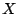

38. Exact Distribution of
the Local Score
in Markovian Case
Keywords: sequence analysis, local score,
statistical significance, Markov Chain, sequence
alignment
Post-sequencing period has arrived. Developing
tools to analyze the numerous sequences in the data banks is one of
the goals of the Genome Project started in 1990. In order to point
out biologically interesting regions of the sequences, numerical
values called scores are attributed to each component of the
sequences (nucleotides, amino acids), reflecting physicochemical
characteristics or geometrical structure attributes. Let
be the corresponding score
sequence where  is the score of the
is the score of the
 -th component of the studied
sequence.
-th component of the studied
sequence.
Let's define the local score as
Segment that realized the local score will be the
most hydrophobic (resp. acidic, ...) segment if the scores are
chosen for an hydrophobic (resp. acidic, ...) problem.
In order to determine really interesting regions,
we must establish the statistical significance of the local score
and first we need a model for the biological sequences. Let
 be a sequence of random variables taking
values in
the chosen
scores.
The i.i.d. model represents the sequence
as a succession of independently and
identically distributed variables. This model has been studied a
lot.
Karlin et al. [1] [2] proposed an approximation of the
distribution of the local score when the average score is
non-positive. This formula is asymptotic with ,
the length of the sequence.
Mercier et al. [3] extended this result with
additional and correctional terms that bring a more precise
approximation. These two works are mainly based on renewal
theory.
Using simple tools of Markov chain theory,
Daudin and Mercier [4] gave
a method to get the exact statistical significance for the local
score in i.i.d. model. This method is valid independently of the
sign of the average score. The P-value is
obtained with the use of a scare matrix  of size
, directly built with the parameters
of the model. The matrix have to be put
to the power , implementations are thus
more rapid and precise with short sequences. For very long
sequences, genome analysis or long DNA sequences, asymptotic
formulas should be preferred.
of size
, directly built with the parameters
of the model. The matrix have to be put
to the power , implementations are thus
more rapid and precise with short sequences. For very long
sequences, genome analysis or long DNA sequences, asymptotic
formulas should be preferred.
We propose in this poster to study the markovian
model. The exact distribution of the local score when the sequence
is a Markov chain is presented. The theory
used is similar as the work for the i.i.d. case in [4]. The local score is written as
the maximum of a Windley process 
where
The P-value of the local score ![$P[H_n\geq a]$](img14.png) is obtained from the distribution of the process
, the process stopped in
is obtained from the distribution of the process
, the process stopped in
 : for and for
with
.
: for and for
with
.
We have
When is an i.i.d. sequence,
is an homogenous Markov chain. Let
be its probability transition matrix. The
P-value is extracted from
. In the Markovian case, is no more homogenous, and we consider (see
[5]) the process
which is an homogenous Markov chain in
.
Comparisons of the distributions in both i.i.d.
and markovian models with an empirical distribution calculated with
real data is done. As the distributions are not approximations, it
is possible to make a comparison between i.i.d. and markovian
models without any bias of the formulas.
An application of this new result is also
possible for the sequences comparison problem and brings a new
approximation of the distribution of the local score of two
sequences gapless alignment case.
- 1
- Karlin, S. and Altshul, S.F., 1990. Methods for assessing the
statistical significance of molecular sequence features by using
general scoring schemes. Proceedings of the National Academy of
Sciences USA 87: 2264-2268.
- 2
- Karlin, S. and Dembo, A. 1992. Limit distributions of maximal
segmental score among Markov-dependent partial sums, Advances
in Applied Probability 24: 113-140.
- 3
- Cellier, D., Charlot, F., Daudin, J.-J. and Mercier, S. 2001.
Exact and asymptotic Distribution of the Local Score of one i.i.d.
Random Sequence. LNCS volume for JOBIM 2000, p:74-85.
- 4
- Mercier, S. and Daudin, J.-J. 2001. Exact Distribution for the
Local Score of one i.i.d. Random Sequence. Journal of
Computational Biology, 8(4): 373-380.
- 5
- Mercier, S. and Hassenforder, C., 2003. Exact Distribution for
the Local Score of a Markov Chain. C. R. Acad. Sci. Paris,
submitted.
Footnotes
- ... MERCIER,1
- University of Toulouse II, UFR SES, Department Math-Info, 31
058 Toulouse Cedex 9, France. E-mail:
mercier@univ-tlse2.fr
2003-04-07